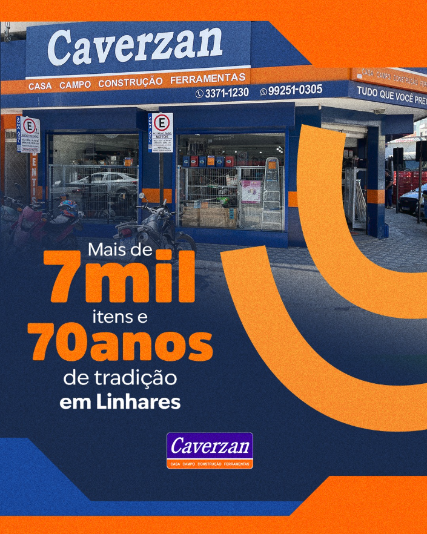
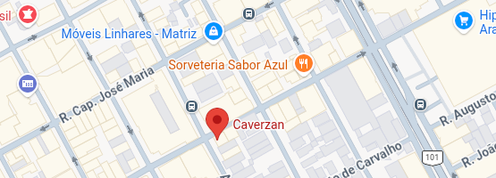

Aprenda mais sobre ferramentas, prevenção e manutenção com conteúdos fáceis de entender
Dicas simples para reparos, organização e cuidados com a casa.
Informações úteis para o trabalho na roça, no sítio e na fazenda.
Aprenda a escolher, usar e cuidar das suas ferramentas.
Tutoriais rápidos para usar ferramentas com mais segurança e confiança.

Conheça as principais ferramentas e descubra para que serve cada uma delas.

Veja quais ferramentas são essenciais para começar seus projetos em casa.

Entenda como os equipamentos de proteção ajudam a prevenir acidentes.

Aprenda de forma simples o significado dessas medidas usadas em equipamentos elétricos.

Dicas práticas para resolver problemas simples do dia a dia sem complicação.

Aprenda a reconhecer situações de risco antes que elas se tornem um problema.
Conhecimento prático para quem vive e trabalha no campo. Informações simples, diretas e úteis para o dia a dia.
Guarde em local seco e aplique uma fina camada de óleo para evitar ferrugem.
Mantenha as lâminas protegidas e fora do alcance de crianças e animais.
Troque o cabo ao notar rachaduras, folgas ou partes quebradas.
Pendure as ferramentas na parede e separe os itens por tipo de uso.
Limpe o local, faça compressão para conter o sangramento e procure atendimento se necessário.
Atenção redobrada para evitar acidentes no campo.
Mesmo uma pequena camada de ferrugem pode reduzir a vida útil da ferramenta.
Terra e umidade acumuladas aceleram o desgaste de cabos e lâminas.
Ferramentas mal conservadas aumentam o risco de acidentes durante o uso.
Cada ferramenta foi criada para uma função específica. Improvisar pode ser perigoso.
Há anos fazendo parte da rotina da comunidade, a Caverzan oferece soluções para quem trabalha no campo, constrói, reforma ou cuida da casa. Com uma ampla variedade de ferramentas e produtos, a loja busca unir qualidade, praticidade e bom atendimento.
Neste site, você também encontra informações simples e acessíveis, porque acreditamos que compartilhar conhecimento é uma forma de fortalecer nossa comunidade e valorizar quem trabalha todos os dias.

📍R. Monsenhor Pedrinha, 1277 - Centro, Linhares - ES, 29901-627
📞 (27) 99251-0305
🕒 Segunda a Sexta: 07h30 às 18h
